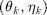
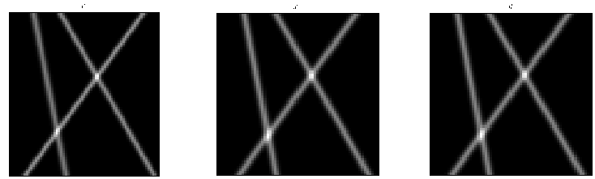
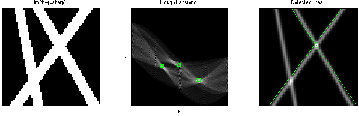
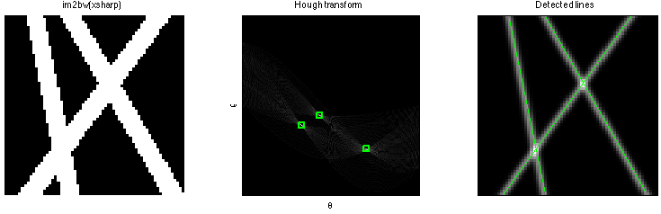

Hough transform applied to lines detection
- Compute the Hough transform of im2bw(xstar)
- Compute also the Hough transform of a thresholding version of xstar
- Peaks correspond to an estimation of parameters of the lines with parameters 
- Display relative errors (for both)
- Display and save this image + peaks (for both)
Contents
DATA GENERATION
W=65; % image width (must be odd W=2M+1) H=65; % image height K=3; % number of lines spread=1; % std of the gaussian blur noiselevel=0; % level of noise randomgen=0; % boolean if lines are generated randomly of manually rng(0); % seed of random numbers generator plotData=1; % display images v, x and y plotComp=0; % display others comparaisons theo vs. emp t_k=[pi/6 -pi/5 pi/16]; % array containing angles of lines a_k=[255 255 255]; % array containing amplitude of lines p_k=[10 0 -15]; % array containing offset of lines data_generation; % Generate the blurred image xstar % of these K lines with additional % noise y=xstar+randn(H,W)*noiselevel
HOUGH TRANSFORM OF THE BINARY VERSION OF XSTAR
Binary version of xstar
BW=im2bw(xstar,0.7);
Hough transform on BW
[H,theta,rho] = hough(BW,'RhoResolution',0.45,'ThetaResolution',0.45); peaks = houghpeaks(H,3,'NHoodSize',2*floor(size(H)/50)+1); lines = houghlines(xstar, theta, rho, peaks);
Display the results
f=figure; subplot(1,3,1); imshow(BW); title('im2bw(xsharp)'); set(gca,'xtick',[],'ytick',[]); subplot(1,3,2); imshow(H,[],'XData',theta,'YData',rho,'InitialMagnification','fit'); xlabel('\theta'), ylabel('\rho'); axis on, axis ij, hold on; plot(theta(peaks(:,2)),rho(peaks(:,1)),'gs','Linewidth',2); title('Hough transform'); set(gca,'xtick',[],'ytick',[]); subplot(1,3,3); imagesc(xstar); colormap gray; axis image; for k = 1:length(lines) xy = [lines(k).point1; lines(k).point2]; line(xy(:,1),xy(:,2),'LineWidth',1.5,'Color','g'); end title('Detected lines'); set(gca,'xtick',[],'ytick',[]); warning off; truesize(f,[200 200]); tightfig;
Peaks of the Hough transform - Estimation of lines parameters
thetapeaks=theta(peaks(:,2)); rhopeaks=rho(peaks(:,1)); thetapeaks=-thetapeaks/180*pi; [t_k_emp,jj]=sort(thetapeaks); [t_k,ii]=sort(t_k); p_k_emp=(rhopeaks+M*sin(thetapeaks))./cos(thetapeaks)-M;
Display the estimated parameters and the relative errors
disp(['t_k = ',num2str(t_k)]); disp(['t_k_emp = ',num2str(t_k_emp)]); disp(['p_k = ',num2str(p_k)]); disp(['p_k_emp = ',num2str(p_k_emp)]); disp(['(t_k-t_k_emp)/t_k = ',num2str((t_k-t_k_emp)./t_k)]); disp(['p_k-p_k_emp = ',num2str(p_k(ii)-p_k_emp(jj))]);
t_k = -0.62832 0.19635 0.5236 t_k_emp = -0.64403 0.007854 0.58905 p_k = 10 0 -15 p_k_emp = -2.00499 -15.9982 10.4889 (t_k-t_k_emp)/t_k = -0.025 0.96 -0.125 p_k-p_k_emp = 2.005 0.99818 -0.48892
HOUGH TRANSFORM ON A THRESHOLDING VERSION OF XSTAR
Thresholding version of xstar
TH=xstar; i = find ( TH <= 230 ); j = find ( 230 < TH ); TH(i) = 0; TH(j) = 255;
Hough transform on BW
[H,theta,rho] = hough(TH,'RhoResolution',0.45,'ThetaResolution',0.45); peaks = houghpeaks(H,3,'NHoodSize',2*floor(size(H)/50)+1); lines = houghlines(xstar, theta, rho, peaks);
Display the results
f=figure; subplot(1,3,1); imshow(BW); title('im2bw(xsharp)'); set(gca,'xtick',[],'ytick',[]); subplot(1,3,2); imshow(H,[],'XData',theta,'YData',rho,'InitialMagnification','fit'); xlabel('\theta'), ylabel('\rho'); axis on, axis ij, hold on; plot(theta(peaks(:,2)),rho(peaks(:,1)),'gs','Linewidth',2); title('Hough transform'); set(gca,'xtick',[],'ytick',[]); subplot(1,3,3); imagesc(xstar); colormap gray; axis image; for k = 1:length(lines) xy = [lines(k).point1; lines(k).point2]; line(xy(:,1),xy(:,2),'LineWidth',1.5,'Color','g'); end title('Detected lines'); set(gca,'xtick',[],'ytick',[]); warning off; truesize(f,[200 200]); tightfig;
Peaks of the Hough transform - Estimation of lines parameters
thetapeaks=theta(peaks(:,2)); rhopeaks=rho(peaks(:,1)); thetapeaks=-thetapeaks/180*pi; [t_k_emp,jj]=sort(thetapeaks); [t_k,ii]=sort(t_k); p_k_emp=(rhopeaks+M*sin(thetapeaks))./cos(thetapeaks)-M;
Display the estimated parameters and the relative errors
disp(['t_k = ',num2str(t_k)]); disp(['t_k_emp = ',num2str(t_k_emp)]); disp(['p_k = ',num2str(p_k)]); disp(['p_k_emp = ',num2str(p_k_emp)]); disp(['(t_k-t_k_emp)/t_k = ',num2str((t_k-t_k_emp)./t_k)]); disp(['p_k-p_k_emp = ',num2str(p_k(ii)-p_k_emp(jj))]);
t_k = -0.62832 0.19635 0.5236 t_k_emp = -0.62046 0.2042 0.51836 p_k = 10 0 -15 p_k_emp = 10.0831 -0.111469 -14.8035 (t_k-t_k_emp)/t_k = 0.0125 -0.04 0.01 p_k-p_k_emp = 10.1115 14.8035 -25.0831